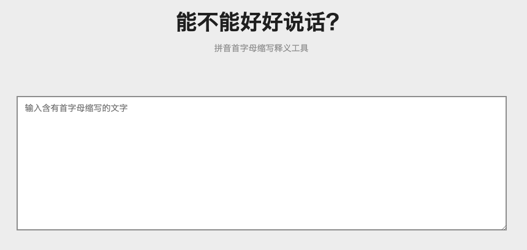

妹子你是认真的吗？.sh 文件只能在 Shanghai 机器跑
大家好，我是 polarisxu。
看到这样一条消息：
妹子你太有才了，想象力一流呀~网友纷纷评论：今日最佳。
基于此，网友们脑洞大开，说出来只有程序员才能听懂的“段子”：
- 压缩一下可以放在广州或兰州跑；
- .bat 文件大概率是 BAT 出身的程序员写的吧；亦或是只有 BAT 公司才能用？
- 如果 .py 文件该作何解释？
- .php 文件呢？
- .rb 果然是日本人发明的，只能在日本才能打开；
- 。。。
当然，也有人说妹子就是故意卖个萌，活跃下群气氛，如果你这都不懂，注定单身。。。
其实，隔行如隔山，一个运营，对于程序员的那些细节，不懂很正常。其实我们碰到一些行外的东西，也可能出现第一反应，以为是那个。
其中有一个哥们说，一直以为 jpg 是 japanese girl 的缩写。。。我只能说：老哥，你的英语学的真好。
这年头，缩写满天飞，让人琢磨不透，难怪前些人国家国定不能用缩写，必须全称。现在社交软件是我们每天都需要用的交流工具，各种缩写让人无语，不知道都怀疑自己是不是 out 了。
你不信？随便给你几个，看你知道什么意思不？
- hgr
- gc
- gzs
- rnb
- 。。。
面对这样乱七八糟的缩写怎么办？程序员真是一个伟大的群体，遇到问题总会想着用程序解决。这不，有网友写了一个工具，叫：「能不能好好说话？」，GitHub 地址：https://github.com/itorr/nbnhhsh （项目名称也是有点意思），还提供了一个可以直接查询的界面：https://lab.magiconch.com/nbnhhsh/ 。

今天你有好好说话吗？dddd~